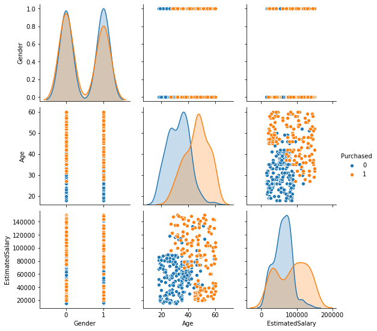
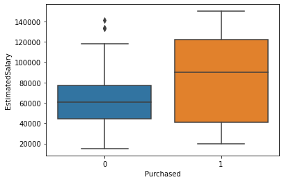
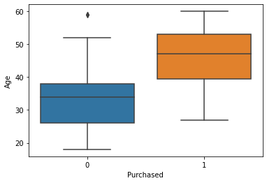
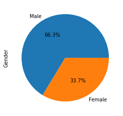
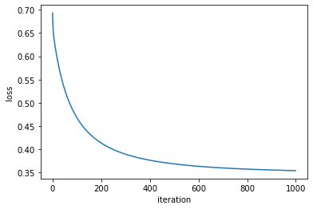
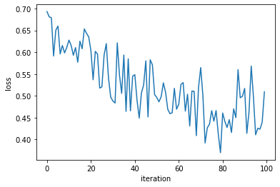
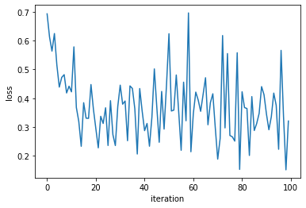

Logistic Regression
Table of content
Logistic Regression
Logistic regression is a statistical algorithm used for binary classification.Logistic regression is a type of supervised learning
Given an input feature vector x , Here we want to recognize this feature vector belongs to class 0 ot class 1
\(\hat{y}\)= \(p(y=1|x)\) , here \(0<=\hat{y} <=1\)
Here \(x\) is feature vector.
parameter - \(w\)
If assuming a linear relationship between the input features and target variable. then \(\hat{y} = x*w^T\)
\(xw^T\) can be much bigger then 1 or can be negative. but here we want predicted output should be between -0 and 1.
In Logistic Regression we use sigmiod function \(\hat{y} = \sigma(x*w^T)\)

\(\sigma(x) = {1\over(1+e^{-x})}\) if \(x\) is very large then \(e^{-x}\) close to 0, \(\sigma(x) = 1\)
if \(x\) is very small then \(e^{-x}\) is huge number, \(\sigma(x) = 0\)
Loss function
In logistic regression loss function $L(y,) = (1/2)*(y-)^2 $ not work well.
we use following loss function
\[L(y,\hat{y}) = - y log(\hat{y}) - (1-y) log(1 - \hat{y})
\] if \(y=1\) then \(L(y,\hat{y}) = - y log(\hat{y})\) <- that means we want \(y log(\hat{y})\) as large as possible, <- that means \(\hat{y}\) will be large. So if y = 1 , then we want \(\hat{y}\) as biggest as possible.
if \(y=0\) then \(L(y,\hat{y}) = - (1-y) log(1-\hat{y})\) <- that means we want \(log(1-\hat{y})\) large, <- that means \(\hat{y}\) will be small.
cost function
\[J(W) =(1/m) \sum L(y,\hat{y}) \]
# This Python 3 environment comes with many helpful analytics libraries installed
# It is defined by the kaggle/python Docker image: https://github.com/kaggle/docker-python
# For example, here's several helpful packages to load
import numpy as np # linear algebra
import pandas as pd # data processing, CSV file I/O (e.g. pd.read_csv)
# Input data files are available in the read-only "../input/" directory
# For example, running this (by clicking run or pressing Shift+Enter) will list all files under the input directory
import os
for dirname, _, filenames in os.walk('/kaggle/input'):
for filename in filenames:
print(os.path.join(dirname, filename))
# You can write up to 5GB to the current directory (/kaggle/working/) that gets preserved as output when you create a version using "Save & Run All"
# You can also write temporary files to /kaggle/temp/, but they won't be saved outside of the current session/kaggle/input/logistic-regression/Social_Network_Ads.csvimport pandas as pd
import numpy as np
import matplotlib.pyplot as plt
from sklearn.model_selection import train_test_split
from sklearn.preprocessing import StandardScaler,LabelEncoder,MinMaxScaler
import seaborn as sns
from sklearn.decomposition import PCAdf=pd.read_csv('/kaggle/input/logistic-regression/Social_Network_Ads.csv')
df.head()| User ID | Gender | Age | EstimatedSalary | Purchased | |
|---|---|---|---|---|---|
| 0 | 15624510 | Male | 19 | 19000 | 0 |
| 1 | 15810944 | Male | 35 | 20000 | 0 |
| 2 | 15668575 | Female | 26 | 43000 | 0 |
| 3 | 15603246 | Female | 27 | 57000 | 0 |
| 4 | 15804002 | Male | 19 | 76000 | 0 |
EDA
# Drop User id
len(df['User ID'].unique())
df.drop(columns=['User ID'],inplace=True)df.describe()| Age | EstimatedSalary | Purchased | |
|---|---|---|---|
| count | 400.000000 | 400.000000 | 400.000000 |
| mean | 37.655000 | 69742.500000 | 0.357500 |
| std | 10.482877 | 34096.960282 | 0.479864 |
| min | 18.000000 | 15000.000000 | 0.000000 |
| 25% | 29.750000 | 43000.000000 | 0.000000 |
| 50% | 37.000000 | 70000.000000 | 0.000000 |
| 75% | 46.000000 | 88000.000000 | 1.000000 |
| max | 60.000000 | 150000.000000 | 1.000000 |
df.isnull().sum()Gender 0
Age 0
EstimatedSalary 0
Purchased 0
dtype: int64df.dtypesGender object
Age int64
EstimatedSalary int64
Purchased int64
dtype: object#conert categorical feature to numarical feature
le=LabelEncoder()
df['Gender']=le.fit_transform(df['Gender'])#Normalize the data
sc=MinMaxScaler()
df_n=sc.fit_transform(df.iloc[:,:-1])#train test split
x_train,x_test,y_train,y_test=train_test_split(df_n,df['Purchased'])
y_train.reset_index(drop=True,inplace=True)
y_test.reset_index(drop=True,inplace=True)
x=x_train
y=y_trainData Visulization
#pairplot
sns.pairplot(df,hue='Purchased')<seaborn.axisgrid.PairGrid at 0x7fd93691a410>
sns.boxplot(x='Purchased',y='EstimatedSalary',data=df)<matplotlib.axes._subplots.AxesSubplot at 0x7fd936293d10>
sns.boxplot(x='Purchased',y='Age',data=df)<matplotlib.axes._subplots.AxesSubplot at 0x7fd934a0a790>
#pie plot
df_gender=df[['Gender','Purchased']].groupby('Purchased').sum()
df_gender.index=['Male','Female']
df_gender['Gender'].plot(kind='pie',autopct='%1.1f%%')
plt.show()
Logistic Regression using Gradient Descent
def sigmoid(x,w,b):
return 1/(1+np.exp(-(np.dot(x,w)+b)))
def loss(x,w,y,b):
s=sigmoid(x,w,b)
return np.mean(-(y*np.log(s))- ((1-y)*np.log(1-s)))
def grad(x,y,w,b):
s=sigmoid(x,w,b)
return np.dot(x.T,(s-y))/x.shape[0]def accuracy(y_pred,y_test):
return np.mean(y_pred==y_test)# initilize w and b
def gradientdescent(x,y):
w=np.zeros((x.shape[1]))
b=np.zeros(1)
ite=1000 #number of iteration
eta=0.7 #learning rate
loss_v=[]
for i in range(ite):
probability=sigmoid(x,w,b)
l=loss(x,w,y,b)
gradient=grad(x,y,w,b)
w=w- (eta*gradient)
b=b-(eta*np.sum(probability-y)/x.shape[0])
loss_v.append(l)
if i%100==0:
print(l)
return w,b,loss_vw,b,loss_v=gradientdescent(x,y)
y_pred=sigmoid(x_test,w,b)
for j,i in enumerate(y_pred):
if i<0.5:
y_pred[j]=0
else:
y_pred[j]=1
print('test accuracy',accuracy(y_pred,y_test))0.6931471805599467
0.46824620053813504
0.41373079197199336
0.3897267439098201
0.37674477979951454
0.36885655071698165
0.363696412749435
0.36014577026616207
0.3576113857482108
0.35575160674492456
test accuracy 0.86plt.plot(range(len(loss_v)),loss_v)
plt.xlabel('iteration')
plt.ylabel('loss')
plt.show()
Logistic Regression using Mini-batch SGD
batch_size=8
def sgd(x,y,batch_size):
# initilize w and b
w=np.zeros((x_train.shape[1]))
b=np.zeros(1)
ite=1000 #number of iteration
eta=0.7 #learning rate
loss_v=[]
for i in range(1000):
ind=np.random.choice(len(y_train),batch_size)
x_b=x[ind]
y_b=y[ind]
p=sigmoid(x_b,w,b)
l=loss(x_b,w,y_b,b)
gradient=grad(x_b,y_b,w,b)
w=w- (0.1*gradient)
b=b-(eta*np.sum(p-y_b)/x.shape[0])
if i%10==0:
loss_v.append(l)
if i%100==0:
print('loss',l)
return w,b,loss_vw,b,loss_v=sgd(x,y,32)
y_pred=sigmoid(x_test,w,b)
for j,i in enumerate(y_pred):
if i<0.5:
y_pred[j]=0
else:
y_pred[j]=1
print('test accuracy',accuracy(y_pred,y_test))loss 0.6931471805599448
loss 0.6278149588111854
loss 0.6035356489914048
loss 0.4881741340927539
loss 0.5486975396008116
loss 0.4963472981460031
loss 0.4807055091535177
loss 0.5649417248839724
loss 0.4608513419074556
loss 0.5171429870812208
test accuracy 0.84plt.plot(range(len(loss_v)),loss_v)
plt.xlabel('iteration')
plt.ylabel('loss')
plt.show()
Logistic Regression using SGD with momentum
batch_size=8
def sgdmomentum(x,y,batch_size):
# initilize w and b
w=np.zeros((x_train.shape[1]))
b=np.zeros(1)
ite=1000 #number of iteration
eta=0.7 #learning rate
alpha=0.9
loss_v=[]
v_t=np.zeros((x_train.shape[1]))
v_b=np.zeros(1)
for i in range(1000):
ind=np.random.choice(len(y_train),batch_size)
x_b=x[ind]
y_b=y[ind]
p=sigmoid(x_b,w,b)
l=loss(x_b,w,y_b,b)
gradient=grad(x_b,y_b,w,b)
v_t =(alpha*v_t) + (eta*gradient)
w=w-v_t
v_b=(alpha*v_b) + (eta*np.sum(p-y_b)/x.shape[0])
b=b-v_b
if i%10==0:
loss_v.append(l)
if i%100==0:
print('loss',l)
return w,b,loss_vw,b,loss_v=sgdmomentum(x,y,32)loss 0.6931471805599448
loss 0.4220835670845099
loss 0.2941736243371927
loss 0.44537673992679633
loss 0.2871349895011394
loss 0.6241278912840013
loss 0.34683687828696796
loss 0.18828219280440267
loss 0.4223695477823046
loss 0.34499265763927867plt.plot(range(len(loss_v)),loss_v)
plt.xlabel('iteration')
plt.ylabel('loss')
plt.show()
#Predction
y_pred=sigmoid(x_test,w,b)
for j,i in enumerate(y_pred):
if i<0.5:
y_pred[j]=0
else:
y_pred[j]=1
print('test accuracy',accuracy(y_pred,y_test))test accuracy 0.86Logistic Regression using Using sklearn
from sklearn.linear_model import LogisticRegressionmodel= LogisticRegression()
model.fit(x_train,y_train)
y_pred=model.predict(x_test)
print('test accuracy',accuracy(y_pred,y_test))test accuracy 0.82